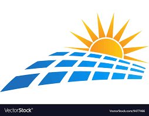
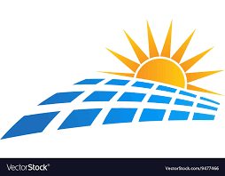

 But where does the money come from? The best way to get the money, would be through charity. For instance, on the page “partner with Us”, has a list of organizations known to donate to charity. It is also a possibility that some of these organizations would be willing to sponsor some schools with solar panels. Or the idea can be pitched to schools around Norway, and they could host fund raisers as well.
The solar foundationis an organization whith a lot of partners. Some of which are known to be charitable.